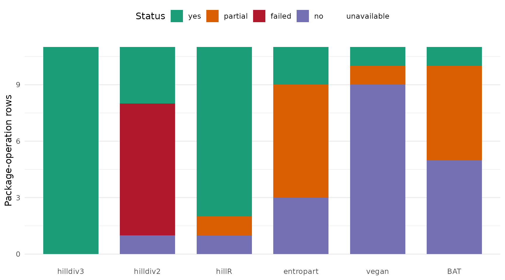
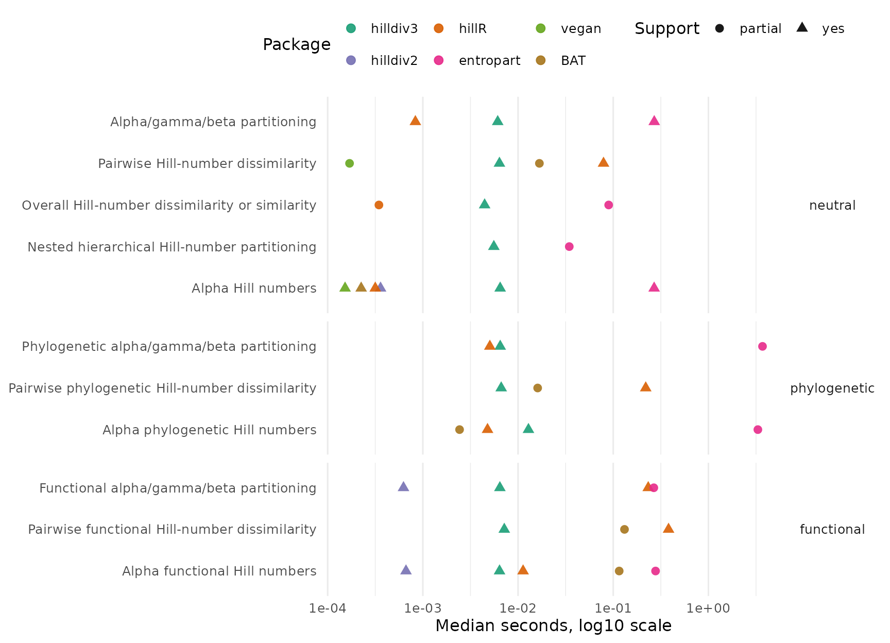
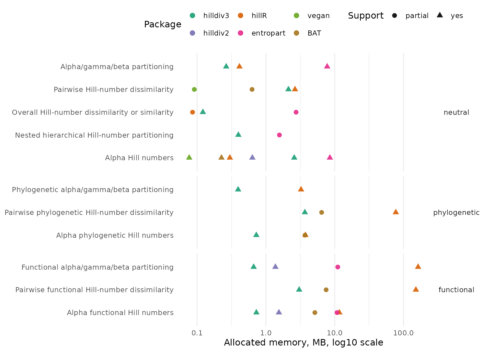

The benchmark suite compares hilldiv3 with the legacy
hilldiv2 code and the external packages hillR,
entropart, vegan and BAT.
Benchmark results
| n_taxa | n_samples | iterations | backend |
|---|---|---|---|
| 80 | 16 | 3 | bench |
Visual summary

Operation support by package.

Median runtime for directly comparable and partially comparable operations. The x-axis is logarithmic.

Allocated memory for directly comparable and partially comparable operations. The x-axis is logarithmic.
The goal is not to force every package into the same table when the operation is not equivalent. Each package-operation row is labelled as:
| Status | Meaning |
|---|---|
yes |
The package has a directly comparable operation. |
partial |
The package has a related operation, but the output or statistical definition differs. |
no |
The package does not expose that operation. |
unavailable |
The package was not installed when the benchmark was run. |
failed |
The package was installed, but the benchmark call errored. |
Support matrix
| operation | facet | package | support | note |
|---|---|---|---|---|
| Alpha functional Hill numbers | functional | hilldiv3 | yes | Direct hilldiv3 call. |
| Alpha functional Hill numbers | functional | hilldiv2 | yes | Direct hilldiv2 call. |
| Alpha functional Hill numbers | functional | hillR | yes | Functional Hill numbers via hill_func(). |
| Alpha functional Hill numbers | functional | entropart | partial | Similarity-based alpha uses Z, not hilldiv3’s distance-threshold functional definition. |
| Alpha functional Hill numbers | functional | vegan | no | vegan does not compute functional Hill numbers. |
| Alpha functional Hill numbers | functional | BAT | partial | BAT::alpha() computes tree-based functional richness, not q = 0, 1, 2 functional Hill numbers. |
| Alpha Hill numbers | neutral | hilldiv3 | yes | Direct hilldiv3 call. |
| Alpha Hill numbers | neutral | hilldiv2 | yes | Direct hilldiv2 call. |
| Alpha Hill numbers | neutral | hillR | yes | Taxonomic Hill numbers via hill_taxa(). |
| Alpha Hill numbers | neutral | entropart | yes | Neutral alpha diversity via AlphaDiversity(). |
| Alpha Hill numbers | neutral | vegan | yes | Neutral Hill numbers via renyi(…, hill = TRUE). |
| Alpha Hill numbers | neutral | BAT | yes | Neutral Hill numbers via hill(). |
| Alpha phylogenetic Hill numbers | phylogenetic | hilldiv3 | yes | Direct hilldiv3 call. |
| Alpha phylogenetic Hill numbers | phylogenetic | hilldiv2 | failed | Direct hilldiv2 call. |
| Alpha phylogenetic Hill numbers | phylogenetic | hillR | yes | Phylogenetic Hill numbers via hill_phylo(). |
| Alpha phylogenetic Hill numbers | phylogenetic | entropart | partial | Phylogenetic alpha requires an ultrametric tree and returns entropart’s normalized phylodiversity. |
| Alpha phylogenetic Hill numbers | phylogenetic | vegan | no | vegan does not compute phylogenetic Hill numbers. |
| Alpha phylogenetic Hill numbers | phylogenetic | BAT | partial | BAT::alpha() computes Faith-style PD richness, not q = 0, 1, 2 phylogenetic Hill numbers. |
| Nested hierarchical Hill-number partitioning | neutral | hilldiv3 | yes | Direct hilldiv3 call. |
| Nested hierarchical Hill-number partitioning | neutral | hilldiv2 | no | No nested hierarchy argument in hilldiv2. |
| Nested hierarchical Hill-number partitioning | neutral | hillR | no | No nested hierarchy argument in hillR. |
| Nested hierarchical Hill-number partitioning | neutral | entropart | partial | MergeMC supports hierarchical metacommunities, but not the same formula API/output. |
| Nested hierarchical Hill-number partitioning | neutral | vegan | no | No nested Hill partitioning API. |
| Nested hierarchical Hill-number partitioning | neutral | BAT | no | No nested Hill partitioning API. |
| Overall Hill-number dissimilarity or similarity | neutral | hilldiv3 | yes | Direct hilldiv3 call. |
| Overall Hill-number dissimilarity or similarity | neutral | hilldiv2 | failed | Direct hilldiv2 call. |
| Overall Hill-number dissimilarity or similarity | neutral | hillR | partial | Returns beta and local/regional similarity, not hilldiv3’s four S/C/U/V dissimilarities. |
| Overall Hill-number dissimilarity or similarity | neutral | entropart | partial | Returns beta diversity, not hilldiv3’s four S/C/U/V dissimilarities. |
| Overall Hill-number dissimilarity or similarity | neutral | vegan | no | vegdist computes pairwise ecological distances, not overall Hill S/C/U/V metrics. |
| Overall Hill-number dissimilarity or similarity | neutral | BAT | no | BAT beta functions are pairwise replacement/richness components, not overall Hill S/C/U/V metrics. |
| Pairwise functional Hill-number dissimilarity | functional | hilldiv3 | yes | Direct hilldiv3 call. |
| Pairwise functional Hill-number dissimilarity | functional | hilldiv2 | failed | Direct hilldiv2 call. |
| Pairwise functional Hill-number dissimilarity | functional | hillR | yes | Pairwise partitioning via hill_func_parti_pairwise(). |
| Pairwise functional Hill-number dissimilarity | functional | entropart | no | No direct all-pairs Hill dissimilarity API. |
| Pairwise functional Hill-number dissimilarity | functional | vegan | no | No functional Hill pairwise dissimilarity API. |
| Pairwise functional Hill-number dissimilarity | functional | BAT | partial | Pairwise FD beta components, not Hill-number dissimilarity. |
| Pairwise Hill-number dissimilarity | neutral | hilldiv3 | yes | Direct hilldiv3 call. |
| Pairwise Hill-number dissimilarity | neutral | hilldiv2 | failed | Direct hilldiv2 call. |
| Pairwise Hill-number dissimilarity | neutral | hillR | yes | Pairwise partitioning via hill_taxa_parti_pairwise(). |
| Pairwise Hill-number dissimilarity | neutral | entropart | no | No direct all-pairs Hill dissimilarity API. |
| Pairwise Hill-number dissimilarity | neutral | vegan | partial | Pairwise Bray-Curtis distance; related, but not Hill-number dissimilarity. |
| Pairwise Hill-number dissimilarity | neutral | BAT | partial | Pairwise Jaccard/Sorensen beta components, not Hill-number dissimilarity. |
| Pairwise phylogenetic Hill-number dissimilarity | phylogenetic | hilldiv3 | yes | Direct hilldiv3 call. |
| Pairwise phylogenetic Hill-number dissimilarity | phylogenetic | hilldiv2 | failed | Direct hilldiv2 call. |
| Pairwise phylogenetic Hill-number dissimilarity | phylogenetic | hillR | yes | Pairwise partitioning via hill_phylo_parti_pairwise(). |
| Pairwise phylogenetic Hill-number dissimilarity | phylogenetic | entropart | no | No direct all-pairs Hill dissimilarity API. |
| Pairwise phylogenetic Hill-number dissimilarity | phylogenetic | vegan | no | No phylogenetic Hill pairwise dissimilarity API. |
| Pairwise phylogenetic Hill-number dissimilarity | phylogenetic | BAT | partial | Pairwise PD beta components, not Hill-number dissimilarity. |
| Functional alpha/gamma/beta partitioning | functional | hilldiv3 | yes | Direct hilldiv3 call. |
| Functional alpha/gamma/beta partitioning | functional | hilldiv2 | yes | Direct hilldiv2 call. |
| Functional alpha/gamma/beta partitioning | functional | hillR | yes | Partitioning via hill_func_parti(). |
| Functional alpha/gamma/beta partitioning | functional | entropart | partial | Similarity-based partitioning uses Z, not hilldiv3’s distance-threshold functional definition. |
| Functional alpha/gamma/beta partitioning | functional | vegan | no | No functional Hill partitioning API. |
| Functional alpha/gamma/beta partitioning | functional | BAT | no | No functional Hill alpha/gamma/beta partitioning API. |
| Alpha/gamma/beta partitioning | neutral | hilldiv3 | yes | Direct hilldiv3 call. |
| Alpha/gamma/beta partitioning | neutral | hilldiv2 | failed | Direct hilldiv2 call. |
| Alpha/gamma/beta partitioning | neutral | hillR | yes | Partitioning via hill_taxa_parti(). |
| Alpha/gamma/beta partitioning | neutral | entropart | yes | Metacommunity partitioning via DivPart(). |
| Alpha/gamma/beta partitioning | neutral | vegan | no | No Hill alpha/gamma/beta partitioning API. |
| Alpha/gamma/beta partitioning | neutral | BAT | no | No Hill alpha/gamma/beta partitioning API. |
| Phylogenetic alpha/gamma/beta partitioning | phylogenetic | hilldiv3 | yes | Direct hilldiv3 call. |
| Phylogenetic alpha/gamma/beta partitioning | phylogenetic | hilldiv2 | failed | Direct hilldiv2 call. |
| Phylogenetic alpha/gamma/beta partitioning | phylogenetic | hillR | yes | Partitioning via hill_phylo_parti(). |
| Phylogenetic alpha/gamma/beta partitioning | phylogenetic | entropart | partial | Phylogenetic partitioning requires an ultrametric tree and uses entropart’s normalization. |
| Phylogenetic alpha/gamma/beta partitioning | phylogenetic | vegan | no | No phylogenetic Hill partitioning API. |
| Phylogenetic alpha/gamma/beta partitioning | phylogenetic | BAT | no | No phylogenetic Hill alpha/gamma/beta partitioning API. |
Timing and memory
Rows marked partial are timed because they are useful
context, but they should not be interpreted as exact replacements for
the corresponding hilldiv3 operation.
| Operation | Facet | Package | Support | Median seconds | Relative to hilldiv3 | Allocated memory | Result size | Error |
|---|---|---|---|---|---|---|---|---|
| Alpha functional Hill numbers | functional | hilldiv3 | yes | 0.0064 | 1x | 744.2 KB | 2.2 KB | |
| Alpha functional Hill numbers | functional | hilldiv2 | yes | 0.0007 | 0.1x | 1.5 MB | 2.2 KB | |
| Alpha functional Hill numbers | functional | hillR | yes | 0.0113 | 1.77x | 11.7 MB | 7.7 KB | |
| Alpha functional Hill numbers | functional | entropart | partial | 0.2784 | 43.56x | 10.8 MB | 14.8 KB | |
| Alpha functional Hill numbers | functional | BAT | partial | 0.1155 | 18.07x | 5.2 MB | 1.8 KB | |
| Alpha Hill numbers | neutral | hilldiv3 | yes | 0.0065 | 1x | 2.6 MB | 2.2 KB | |
| Alpha Hill numbers | neutral | hilldiv2 | yes | 0.0004 | 0.06x | 651.6 KB | 2.2 KB | |
| Alpha Hill numbers | neutral | hillR | yes | 0.0003 | 0.05x | 306.5 KB | 4.4 KB | |
| Alpha Hill numbers | neutral | entropart | yes | 0.2691 | 41.46x | 8.5 MB | 14.2 KB | |
| Alpha Hill numbers | neutral | vegan | yes | 0.0002 | 0.02x | 78.6 KB | 2.5 KB | |
| Alpha Hill numbers | neutral | BAT | yes | 0.0002 | 0.03x | 231.4 KB | 5.4 KB | |
| Alpha phylogenetic Hill numbers | phylogenetic | hilldiv3 | yes | 0.0129 | 1x | 743.4 KB | 2.2 KB | |
| Alpha phylogenetic Hill numbers | phylogenetic | hilldiv2 | failed | could not find function “pull” | ||||
| Alpha phylogenetic Hill numbers | phylogenetic | hillR | yes | 0.0048 | 0.37x | 3.8 MB | 4.4 KB | |
| Alpha phylogenetic Hill numbers | phylogenetic | entropart | partial | 3.3067 | 257.05x | 14.7 KB | ||
| Alpha phylogenetic Hill numbers | phylogenetic | BAT | partial | 0.0024 | 0.19x | 3.7 MB | 1.8 KB | |
| Nested hierarchical Hill-number partitioning | neutral | hilldiv3 | yes | 0.0056 | 1x | 407.5 KB | 2.6 KB | |
| Nested hierarchical Hill-number partitioning | neutral | entropart | partial | 0.0345 | 6.2x | 1.6 MB | 4.1 KB | |
| Overall Hill-number dissimilarity or similarity | neutral | hilldiv3 | yes | 0.0045 | 1x | 124.2 KB | 56 B | |
| Overall Hill-number dissimilarity or similarity | neutral | hilldiv2 | failed | could not find function “select” | ||||
| Overall Hill-number dissimilarity or similarity | neutral | hillR | partial | 0.0003 | 0.08x | 87.9 KB | 1.5 KB | |
| Overall Hill-number dissimilarity or similarity | neutral | entropart | partial | 0.0896 | 20.1x | 2.7 MB | 6.4 KB | |
| Pairwise functional Hill-number dissimilarity | functional | hilldiv3 | yes | 0.0072 | 1x | 3 MB | 3 KB | |
| Pairwise functional Hill-number dissimilarity | functional | hilldiv2 | failed | could not find function “pull” | ||||
| Pairwise functional Hill-number dissimilarity | functional | hillR | yes | 0.3812 | 53.18x | 151.6 MB | 11.1 KB | |
| Pairwise functional Hill-number dissimilarity | functional | BAT | partial | 0.1313 | 18.32x | 7.5 MB | 19.8 KB | |
| Pairwise Hill-number dissimilarity | neutral | hilldiv3 | yes | 0.0064 | 1x | 2.1 MB | 3 KB | |
| Pairwise Hill-number dissimilarity | neutral | hilldiv2 | failed | could not find function “select” | ||||
| Pairwise Hill-number dissimilarity | neutral | hillR | yes | 0.0791 | 12.4x | 2.7 MB | 11.1 KB | |
| Pairwise Hill-number dissimilarity | neutral | vegan | partial | 0.0002 | 0.03x | 93.3 KB | 4.5 KB | |
| Pairwise Hill-number dissimilarity | neutral | BAT | partial | 0.0168 | 2.63x | 644.8 KB | 19.8 KB | |
| Pairwise phylogenetic Hill-number dissimilarity | phylogenetic | hilldiv3 | yes | 0.0067 | 1x | 3.7 MB | 3 KB | |
| Pairwise phylogenetic Hill-number dissimilarity | phylogenetic | hilldiv2 | failed | Error: The vector needs to contain names in order to link it to the tree tips | ||||
| Pairwise phylogenetic Hill-number dissimilarity | phylogenetic | hillR | yes | 0.2194 | 32.98x | 77.4 MB | 11.1 KB | |
| Pairwise phylogenetic Hill-number dissimilarity | phylogenetic | BAT | partial | 0.0161 | 2.41x | 6.5 MB | 19.8 KB | |
| Functional alpha/gamma/beta partitioning | functional | hilldiv3 | yes | 0.0064 | 1x | 679.9 KB | 1016 B | |
| Functional alpha/gamma/beta partitioning | functional | hilldiv2 | yes | 0.0006 | 0.1x | 1.4 MB | 1016 B | |
| Functional alpha/gamma/beta partitioning | functional | hillR | yes | 0.2332 | 36.19x | 163.3 MB | 4.7 KB | |
| Functional alpha/gamma/beta partitioning | functional | entropart | partial | 0.2668 | 41.41x | 11.1 MB | 19.7 KB | |
| Alpha/gamma/beta partitioning | neutral | hilldiv3 | yes | 0.0061 | 1x | 271.1 KB | 1016 B | |
| Alpha/gamma/beta partitioning | neutral | hilldiv2 | failed | could not find function “select” | ||||
| Alpha/gamma/beta partitioning | neutral | hillR | yes | 0.0008 | 0.14x | 422.8 KB | 4.7 KB | |
| Alpha/gamma/beta partitioning | neutral | entropart | yes | 0.2697 | 44.11x | 7.8 MB | 19.1 KB | |
| Phylogenetic alpha/gamma/beta partitioning | phylogenetic | hilldiv3 | yes | 0.0065 | 1x | 404.1 KB | 1016 B | |
| Phylogenetic alpha/gamma/beta partitioning | phylogenetic | hilldiv2 | failed | Error: The vector needs to contain names in order to link it to the tree tips | ||||
| Phylogenetic alpha/gamma/beta partitioning | phylogenetic | hillR | yes | 0.0051 | 0.78x | 3.2 MB | 4.3 KB | |
| Phylogenetic alpha/gamma/beta partitioning | phylogenetic | entropart | partial | 3.6996 | 569.56x | 39.6 KB |
Reproducing the benchmark
Install the comparison packages, then run the benchmark script from the package root:
install.packages(c("bench", "hillR", "entropart", "vegan", "BAT"))
remotes::install_github("anttonalberdi/hilldiv2")
Sys.setenv(
BENCH_ITERATIONS = 5,
BENCH_N_TAXA = 200,
BENCH_N_SAMPLES = 40
)
source("inst/benchmarks/run-benchmarks.R")The script writes:
| File | Contents |
|---|---|
inst/benchmarks/results/performance.csv |
Support status, timing and memory table. |
inst/benchmarks/results/session-info.txt |
R version, platform and package versions. |
Increase BENCH_ITERATIONS, BENCH_N_TAXA or
BENCH_N_SAMPLES for the final publication run. Keep
session-info.txt with the published results because
benchmark times depend on hardware, BLAS, R version and package
versions.
Notes on equivalence
hillR is the closest external comparator for Hill-number
alpha diversity, partitioning and pairwise comparisons across taxonomic,
phylogenetic and functional diversity.
entropart supports metacommunity alpha, beta and gamma
diversity, including phylogenetic and similarity-based diversity, but
some outputs and assumptions differ from the hilldiv3
API.
vegan provides neutral Hill numbers through Renyi
diversity and many pairwise community dissimilarities, but it does not
implement the phylogenetic, functional or Hill-number S/C/U/V
dissimilarity operations used by hilldiv3.
BAT includes biodiversity assessment tools for
taxonomic, phylogenetic and functional diversity. Its Hill-number
function is a neutral alpha-diversity comparator; its beta-diversity
tools are related but not the same Hill-number partition/dissimilarity
operations.
Session info
R version 4.3.3 (2024-02-29)
Platform: aarch64-apple-darwin20 (64-bit)
Running under: macOS 15.6.1
Matrix products: default
BLAS: /Library/Frameworks/R.framework/Versions/4.3-arm64/Resources/lib/libRblas.0.dylib
LAPACK: /Library/Frameworks/R.framework/Versions/4.3-arm64/Resources/lib/libRlapack.dylib; LAPACK version 3.11.0
locale:
[1] C.UTF-8/C.UTF-8/C.UTF-8/C/C.UTF-8/C.UTF-8
time zone: Europe/Copenhagen
tzcode source: internal
attached base packages:
[1] stats graphics grDevices utils datasets methods base
other attached packages:
[1] hilldiv3_3.0.0.9000 testthat_3.3.2
loaded via a namespace (and not attached):
[1] RColorBrewer_1.1-3 subplex_1.9 magrittr_2.0.5
[4] farver_2.1.2 vctrs_0.7.3 RCurl_1.98-1.16
[7] terra_1.8-54 progress_1.2.3 DEoptim_2.2-8
[10] deSolve_1.40 pROC_1.19.0.1 caret_7.0-1
[13] parallelly_1.47.0 pracma_2.4.6 KernSmooth_2.23-26
[16] desc_1.4.3 plyr_1.8.9 hillR_0.5.2
[19] palmerpenguins_0.1.1 lubridate_1.9.5 hilldiv2_2.0.5
[22] igraph_2.1.1 lifecycle_1.0.5 iterators_1.0.14
[25] pkgconfig_2.0.3 Matrix_1.6-5 R6_2.6.1
[28] rbibutils_2.4.1 future_1.70.0 magic_1.6-1
[31] digest_0.6.39 numDeriv_2016.8-1.1 colorspace_2.1-2
[34] rprojroot_2.1.1 pkgload_1.5.1 vegan_2.6-8
[37] pdist_1.2.1 progressr_0.19.0 clusterGeneration_1.3.8
[40] timechange_0.4.0 abind_1.4-8 mgcv_1.9-1
[43] compiler_4.3.3 proxy_0.4-29 withr_3.0.2
[46] bit64_4.8.0 doParallel_1.0.17 S7_0.2.1-1
[49] optimParallel_1.0-2 bench_1.1.4 pkgbuild_1.4.8
[52] R.utils_2.13.0 maps_3.4.3 MASS_7.3-60.0.1
[55] lava_1.9.0 scatterplot3d_0.3-45 permute_0.9-10
[58] ModelMetrics_1.2.2.2 tools_4.3.3 otel_0.2.0
[61] ape_5.8-1 entropart_1.6-16 phytools_2.5-2
[64] future.apply_1.20.2 nnet_7.3-20 TreeTools_1.14.0
[67] R.oo_1.27.1 glue_1.8.1 quadprog_1.5-8
[70] BAT_2.10.0 profmem_0.7.0 nlme_3.1-166
[73] R.cache_0.17.0 grid_4.3.3 ade4_1.7-22
[76] cluster_2.1.8.2 reshape2_1.4.5 PlotTools_0.3.1
[79] generics_0.1.4 recipes_1.3.2 gtable_0.3.6
[82] R.methodsS3_1.8.2 class_7.3-23 data.table_1.18.2.1
[85] hms_1.1.4 foreach_1.5.2 pillar_1.11.1
[88] stringr_1.6.0 splines_4.3.3 dplyr_1.2.1
[91] lattice_0.22-9 survival_3.8-6 bit_4.6.0
[94] ks_1.15.1 tidyselect_1.2.1 stats4_4.3.3
[97] expm_1.0-0 hardhat_1.4.3 timeDate_4052.112
[100] brio_1.1.5 proto_1.0.0 stringi_1.8.7
[103] geiger_2.0.11 codetools_0.2-20 tibble_3.3.1
[106] cli_3.6.6 nls2_0.3-4 rpart_4.1.27
[109] geometry_0.5.2 Rdpack_2.6.6 Rcpp_1.1.1-1
[112] globals_0.19.1 FD_1.0-12.3 tidyverse_2.0.0
[115] coda_0.19-4.1 fastcluster_1.3.0 parallel_4.3.3
[118] gower_1.0.2 ggplot2_4.0.2 prettyunits_1.2.0
[121] mclust_6.1.1 bitops_1.0-9 listenv_0.10.1
[124] phangorn_2.12.1 mvtnorm_1.3-1 ipred_0.9-15
[127] e1071_1.7-17 scales_1.4.0 prodlim_2026.03.11
[130] purrr_1.2.2 crayon_1.5.3 combinat_0.0-8
[133] rlang_1.2.0 fastmatch_1.1-8 mnormt_2.1.1
[136] hypervolume_3.1.6